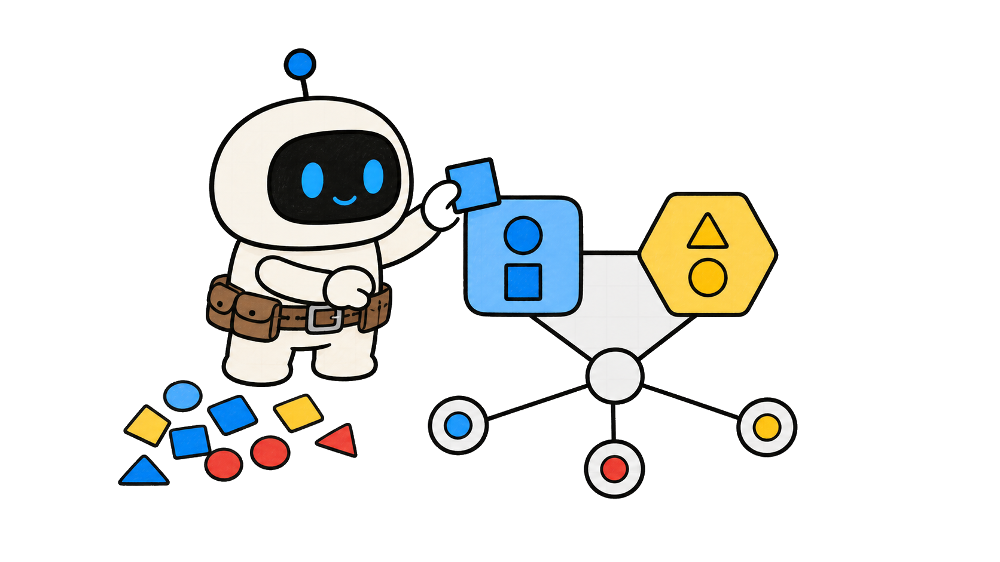
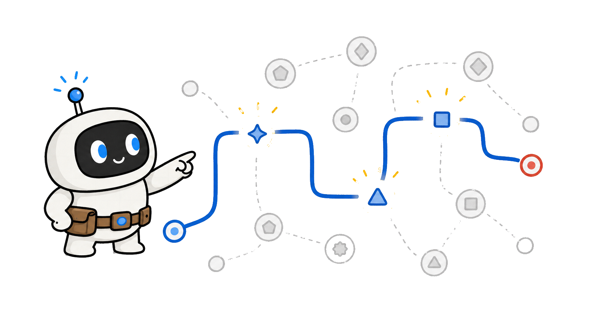
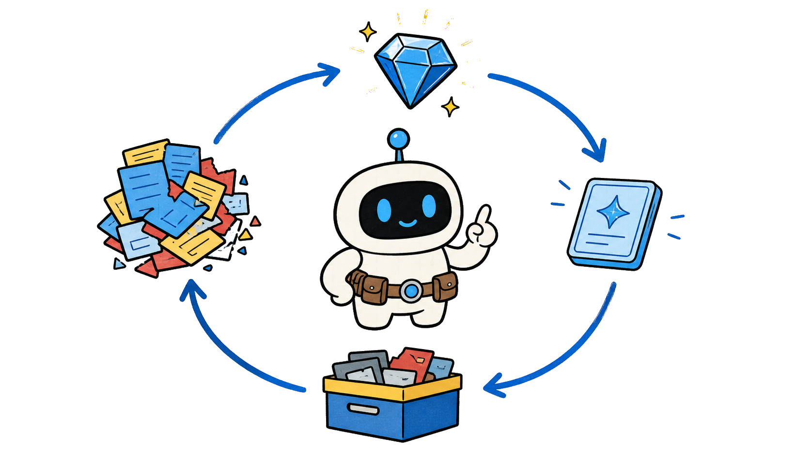
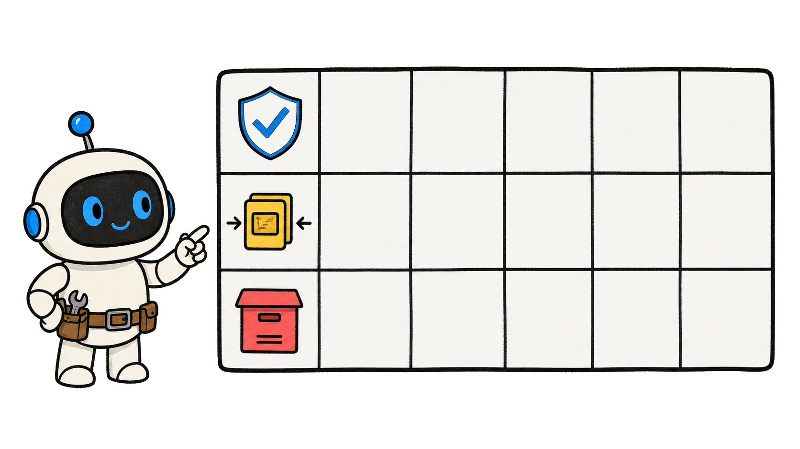

你知道 AI 智能体记得越多，为什么反而可能越笨吗？
记得更多？

Microsoft Research：原始历史会埋没有用经验

OPENAI 日志混入信号与噪声
日志混入信号与噪声
日志混入信号与噪声
AI 智能体可能错过会改变下一步的约束
更多上下文 · 更少聚焦


使用 AI 智能体保留、提炼、遗忘表

≠

保留 · 提炼 · 退出
能支持决策的记忆，比更大的档案更重要

当前有用
高价值 AI 智能体方法
让决策更好
第 2 章
原始历史
完整日志不等于有用提示词

一条记录可混入决策、搜索、计划和报错

不同价值 · 同一日志

历史用于追溯，不必默认进入每个任务
可追溯不等于要检索
可追溯不等于要检索
噪声会挡住此刻真正重要的条件

找到决策信号
更大的检索可能让推理更慢更弱


更多文字 · 更低精度
先加工历史，再送进上下文窗口

≠

事件变知识
保存不等于提示词
两个决定
决策效用
保存不等于提示词
两个决定
决策效用
保存不等于提示词
两个决定
决策效用
第 3 章
有用单元
建立可复用知识

从文本片段转向结构化知识


经验变单元
事实保存已核实的约束和结果
什么足够可信？

技能保存可重复的行动模式

何时 · 步骤 · 停止
事实缩小选择，技能指导推进

≠
事实加过程
去掉重复叙述，不丢失经验教训

紧凑复用
事实
技能
一个目的
事实
技能
一个目的
事实
技能
一个目的
第 4 章
任务路由
为当前任务检索

用目标、对象、风险和下一步做路由

四个线索
不要因为宽泛关键词拿回所有记录

≠
话题匹配太粗
只挑会改变当前判断的事实和技能

任务对齐检索
把检索结果压缩成行动指引

已知 · 重要 · 待查
实时问题仍要补充新证据
记忆不是实时证明
决策优先
紧凑上下文
新证据
决策优先
紧凑上下文
新证据
决策优先
紧凑上下文
新证据
第 5 章
记忆周期
保留、提炼或退出
保留可靠且有未来决策价值的内容
可靠加可复用
可靠加可复用
把长事件提炼成事实、规则或交接
留下经验
让过期、重复和低置信内容退出主动记忆

不再抢注意力
退出工作记忆，不等于删除审计证据
轨迹仍在
轨迹仍在
用复查日期防止旧记忆误导人


环境会改变
未来价值
经验规则
主动不等于删除
未来价值
经验规则
主动不等于删除
未来价值
经验规则
主动不等于删除
第 6 章
记忆表
应用 AI 智能体记忆工具
每条候选记忆写六个字段

项 · 价值 · 状态 · 形式线索 · 日期
保留会改变权限的已核实约束

≠

系统加动作
把重复修复提炼成技能
触发 · 步骤 · 证据 · 停止
触发步骤证据停止
保留一个可追溯来源，让重复记录退出
一条证据路径
说不出下一步价值，就不该永久占位

先说清决策
为何保存？
三个状态
持续有用
为何保存？
三个状态
持续有用
为何保存？
三个状态
持续有用
AI 智能体不会因带上每条旧消息而变聪明

记忆不等于智慧
记忆不等于智慧
用事实和技能做行动输入

有用单元
从决策路由，再压缩结果

看清重点
明确选择保留、提炼和遗忘

可复查系统
在自己的 AI 智能体工作流中验证


证据不是保证

Microsoft Research 指出，
长交互历史会把有用经验和无关细节混在一起。
智能体每次都从更大的材料堆里找答案，上下文被噪声占满，
真正会改变下一步的约束反而更难被找到。
这一期给你一张 AI 智能体保留、提炼、遗忘表：
判断什么该继续可用，什么要压缩成经验，什么不该再抢占注意力。
目标不是让智能体拥有完美记忆，
而是拥有能支持当前决策的最小有效记忆；
每次检索都要配得上当前任务。
视频全程干货高价值，让你成为更擅长使用 AI 的人，
内容较长，点点关注收藏不迷路。
第 2 章：原始历史。
先分清完整日志和有用记忆不是同一件事。
一次交互记录里，可能同时有决策、失败搜索、复制材料、
过期计划和临时工具报错。
保留原记录，对追溯和恢复很重要；
但把整段记录送回每一个新任务，是另一种完全不同的选择。
检索到的无关细节越多，
智能体越难找到真正会改变当前判断的条件。
所以更多记忆可能看似提高了回忆量，却让推理更慢、更不可靠。
更危险的是，
智能体会把一条过期细节和一条关键约束放在同一层级，
无法主动判断谁该优先进入当前窗口。
把历史当成需要加工的来源，而不是必须整桶倒进上下文的材料。
本章小节。
第一，原始历史用于追溯，不等于默认提示词。
第二，先区分保存事件和当前检索事件的价值。
第三，用是否改善下一步决策来衡量记忆。
第 3 章：有用单元。
把经验转成 AI 智能体真正能复用的东西。
原文描述了一种转变：不只保存文本片段，而是保存结构化知识。
一类单元是事实，例如已经核实的约束、当前设置，
或能缩小安全操作范围的结果。
另一类单元是可复用技能：什么时候行动、要收集什么证据、
何时停止的紧凑步骤。
事实回答当前任务里什么足够可信；
技能回答下次遇到同类模式时怎样推进。
两者都应带着来源或触发条件，
避免把一次碰巧成功的做法误写成任何环境都适用的规则。
这样可以去掉重复叙述，却不丢失交互中真正有价值的经验。
本章小节。
第一，把已核实事实从原始记录中提取出来。
第二，把可重复的过程写成技能，而不是保存故事。
第三，让每个单元只服务一个未来判断。
第 4 章：任务路由。
只检索属于当前任务的知识。
PlugMem 用高层概念和推断出的意图做路由信号，
而不是默认返还很长的原文段落。
实际操作时，先写清当前目标、对象、风险和下一步需要什么支持。
再用这些线索挑选少量事实和技能，
不要因为共享一个宽泛关键词就拿回全部记录。
选中的记忆进入基础智能体前，还要压缩成行动指引：已知什么、
什么重要、还要核对什么。
这样即使模型切换、窗口变短，
下一步也能从同一份明确的决策依据继续。
如果答案依赖实时变化的信息，检索旧记忆仍然不够，
必须补充当前来源的证据。
本章小节。
第一，从当前决策路由，不从模糊话题路由。
第二，交给智能体的是行动指引，不是整段聊天记录。
第三，变化中的事实必须补充新证据。
第 5 章：记忆周期。
决定每条内容是保留、压缩，还是退出工作记忆。
当一条内容已核实、很可能影响以后决策，并且有清晰检索线索时，
应该保留。
当一次事件很长，但经验能变成事实、规则、
检查清单或交接笔记时，应该提炼。
当内容过期、重复、置信度低，或只适合审计而不适合行动时，
应退出主动检索。
退出工作记忆不等于删除证据；
治理和排障需要时，原始轨迹仍应可查。
真正要避免的是旧材料在没有任务价值时不断被召回，
并让新证据失去应有的位置。
还要写复查日期，因为曾经正确的政策、
工具结果或偏好会随环境变化变得误导人。
本章小节。
第一，保留能持续影响决策的可靠事实。
第二，把长经验提炼成规则或技能。
第三，让过期和重复内容退出主动检索，但保留审计轨迹。
第 6 章：记忆表。
下一次长任务前，用保留、提炼、遗忘表做一次筛选。
每条候选记忆写六个字段：记忆项、下一任务价值、状态、
紧凑形式、检索线索和复查日期。
如果部署约束改变了权限，就保留这条已核实约束，
并写清它影响哪个系统和动作。
如果一次排障发现了可重复的修复方式，就提炼成技能：触发条件、
步骤、证据和停止条件。
如果五份记录都讲了同一个发现，留下一个可追溯来源，
让重复记录退出主动检索。
若后来发现结论只适用于某个工具版本，
就在同一行补上边界和复查日期，而不是再堆一份相似摘要。
如果你说不出它能改善哪个下一步决策，
它大概率不该永久占据智能体的工作记忆。
本章小节。
第一，保存前先写清它的决策价值。
第二，有意识地选择保留、提炼或遗忘。
第三，补上检索线索和复查日期，让记忆持续有用。
AI 智能体不会因为把每条旧消息都带进每个新任务，
就自动变得更聪明。
原始历史适合追溯；
对行动来说，能够复用的事实和技能往往才是更好的输入。
从当前决策开始路由记忆，
再把结果压缩到不读完整过去也能看清重点的程度。
用保留、提炼、遗忘表把保存、检索和退出变成明确选择，
而不是偶然发生。
原文的基准结果值得参考，但它更适合推动你检验自己的记忆设计，
不是所有智能体都一定提升的保证。
关注 Tiny Agent，成为更擅长使用 AI 的人！
你知道 AI 智能体
记得越多，为什么反而
可能越笨吗？


关注 Tiny Agent
成为更擅长使用 AI 的人！